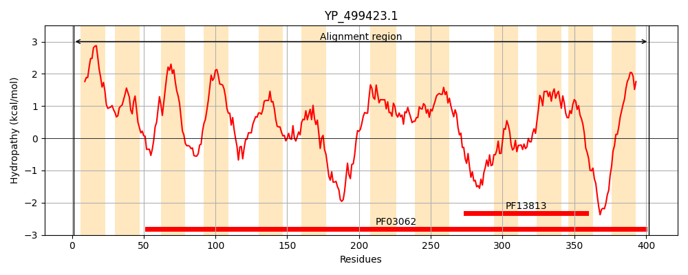
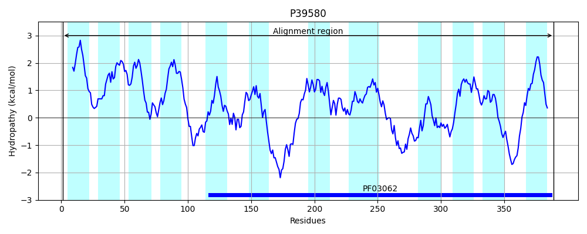
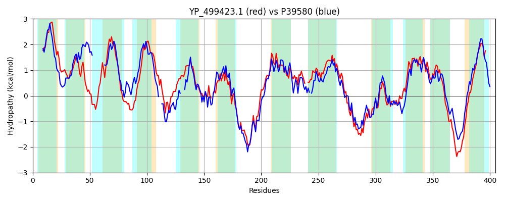

Hit Accession: P39580
Hit TCID: 2.A.50.2.1
Hit Description: gnl|BL_ORD_ID|10280 gnl|TC-DB|P39580|2.A.50.2.1 Protein dltB - Bacillus subtilis.
Mach Len: 405
e:0.000000
Query TMS Count : 12
Hit TMS Count: 12
TMS-Overlap Score: 5.550000
Predicted Substrates:CHEBI:2539;alanine
BLAST Alignment:
Score: 1059 , Bit scores: 412 bits, E-value: 4.0e-143, Alignment length: 405, Percentage identity: 52
Query: 1 MIPYGDFTFFLIALIALLPVIILGFLGKRSYIYNGVVTAFMIVLIFSSDKHNLFDQKYLSVQLISFIIYVVWQVLLIMFYYHSKPKNNSFSKFVTVMVLSILPLALVKVLQSTWLGGHQIHFHESKLIEFVGFLGISYVTFKSVQLIMEIRDGSIKE-IKVWKLIQFISFFPTISSGPIDRYKRFVKDDKKVPTGNEYRELVLKAIHMIMLGFLYKYIVAYFINTYAIMPLQLDLHGFV--NLWLYMYAYSLYLFFDFAGYSLFAIAFSYLFGIKTPPNFDKPFKAKNIKDFWNRWHMTLSFWFRDCIYMRSLFYMSRKKLLKSQFAMSNVAFLINFFIMGIWHGIEVYYIVYGLYHAALFIGYGYYERWRKKHPPRWQNGFTTALSIVITFHFVTFGFLIFSGK 402
M PY F FF++ I LLP IILG GKR YN ++ ++ LIFS D H + I+ ++ +WQVLLI Y + K NS F ++ SILPL L K+ +L Q H LI F LGISY+TFK VQLIME RDG +KE + + +L+ FI FFPTISSGPIDRY+RFVKD++K T EY +L+ IH I +GFLYK+I+ Y INTY IM L H + NL LYMY YS+YLFFDFAGY++FA+ SY+ GIK+P NF+KPF +KNIKDFWNRWHM+LSFWFRD ++MR +F+M++KK +K++ A+SN+ + + F +MG+WHG+ YI+YGLYHA L Y ++E+W KK+ N +TT L+IVITFHFV FGF IFSGK
Sbjct: 1 MTPYSSFLFFILLGILLLPTIILGLNGKRFQAYNMFISIIILALIFSHDLHGV----------IALCLFTIWQVLLISGYLAYRQKANSGFVFCGAVIASILPLFLSKIWP--FLSHPQPHHPPHNLISF---LGISYLTFKGVQLIMEARDGLLKEQLPLHRLLYFILFFPTISSGPIDRYRRFVKDEQKAWTKEEYADLLYTGIHKIFIGFLYKFIIGYAINTYFIMNLPAITHNKILGNL-LYMYGYSMYLFFDFAGYTMFAVGVSYIMGIKSPENFNKPFISKNIKDFWNRWHMSLSFWFRDYVFMRFVFWMTKKKWIKNRMAVSNIGYFLLFMLMGVWHGLAPQYIIYGLYHAVLMTCYNFFEKWNKKYKWLPSNRWTTILAIVITFHFVCFGFYIFSGK 389 | Protein Hydropathy Plots: |
|---|
|  |  |
Pairwise Alignment-Hydropathy Plot:
|
|---|
|  |